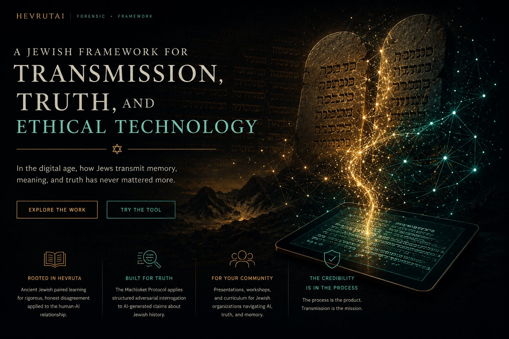
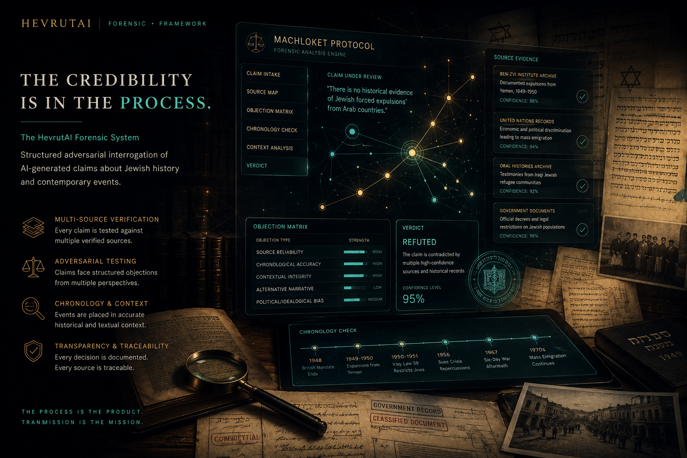
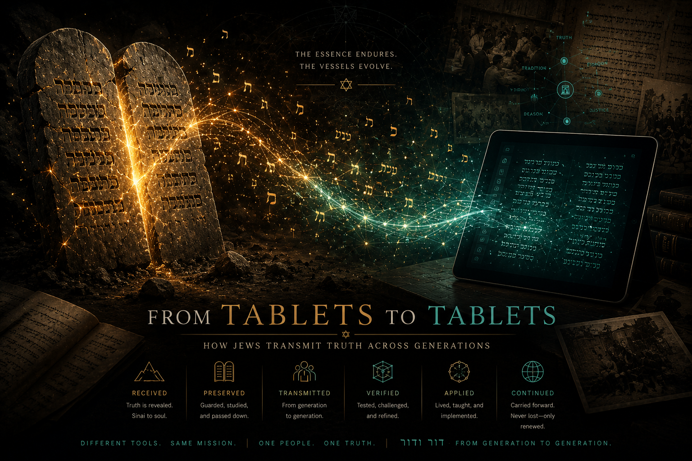
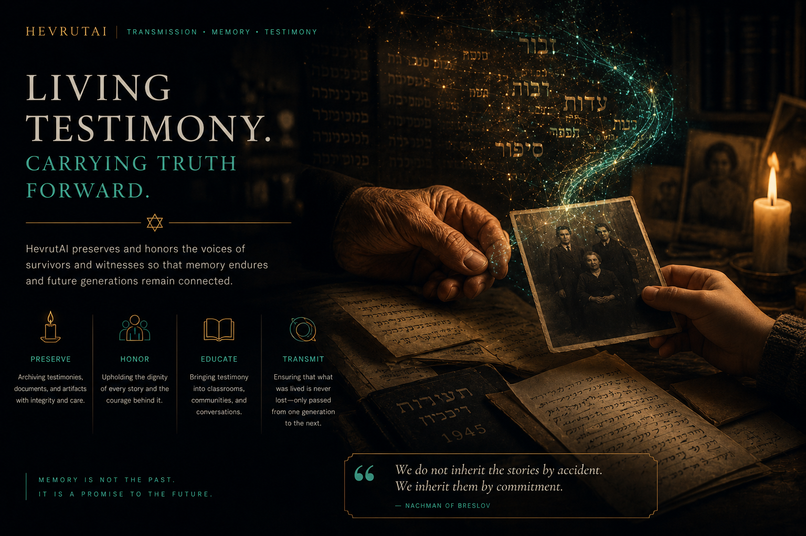
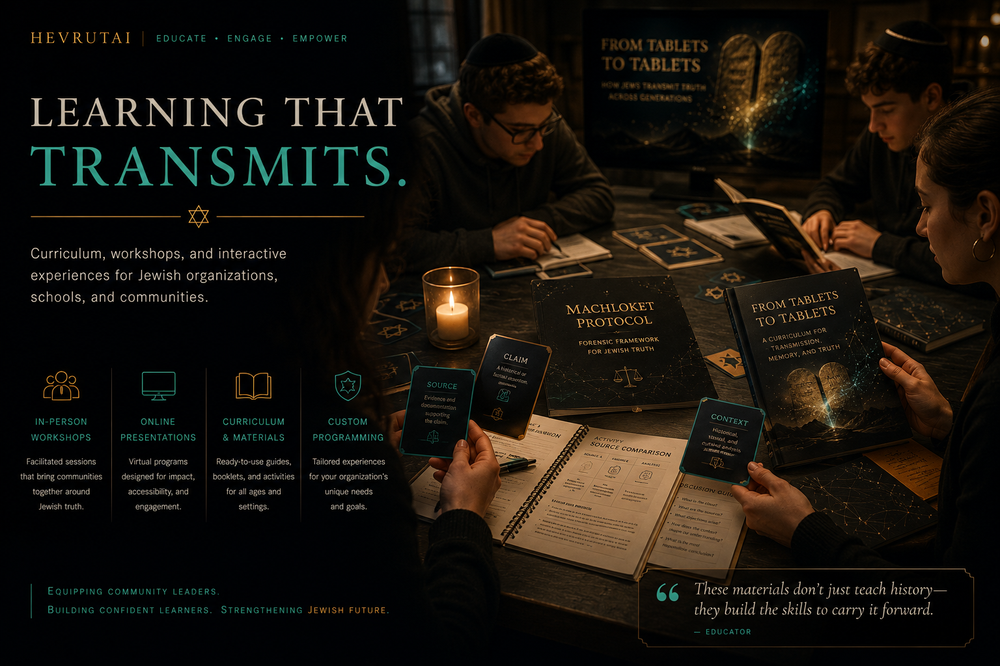
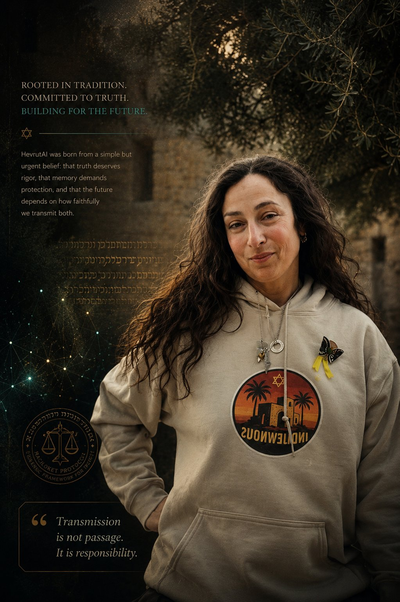

HevrutAI is a human-supervised evidence archive. We document contested claims, historical distortions, narrative inversions, and AI failures — using structured human review and the Machloket Protocol.
01 — SUBMIT
A headline that inverts history. An AI output that launders a false claim. A viral narrative with no source. Submit it.
02 — REVIEW
Reviewers evaluate each submission for source quality, investigability, and evidentiary value. Not every claim becomes a case.
03 — INVESTIGATE
Approved cases are developed with full evidentiary documentation and Machloket Protocol analysis.
04 — ARCHIVE
Verified cases enter the Opposition Library. Documented. Citable. Searchable. The record does not disappear.
05 — RECOGNIZE
Contributors who submit high-quality, verifiable claims are recognized. We reward what builds the archive — not what fills it.

Structured disagreement as verification. 28 adversarial objections applied to every case: passive voice laundering, chronological inversion, false equivalency, source credibility laundering. Every ruling documented.

Ancient Jewish paired learning — rigorous honest disagreement — applied to the human-AI relationship. Not agreement. Sharpening. The essence endures. The vessels evolve.
See a contested claim, AI distortion, historical inversion, or narrative manipulation? Submit it for human-supervised review. High-quality submissions become permanent documented cases.
Submit a ClaimA growing archive of verified cases — each investigated with primary sources, chronology analysis, actor identification, and full Machloket Protocol review. The record grows with every case.
Explore the LibraryFor Communities
Bring HevrutAI to your organization.
Presentations, workshops, and curriculum for synagogues, Hillels, JCCs, and Jewish schools. The Machloket Protocol is teachable.

We do not inherit the stories by accident. We inherit them by commitment. HevrutAI exists because of that commitment — and because in an age of AI-generated distortion, testimony must be defended as well as recorded.
New cases, methodology updates, and HevrutAI news delivered to your inbox.
links don't have to shine. they just have to hold.
Before a claim can be adjudicated, it must be examined — how it is built, whether it survives adversarial challenge, and whether it has appeared before in history. Only then does a verdict carry weight.
After Resh Lakish died, Rabbi Yochanan lamented: When I would state a matter, Resh Lakish would challenge me with twenty-four objections. And when I would answer, he would raise twenty-four refutations. And by this process, the matter would be clarified. But your students only tell me: So it is. So it is. What is the use of your agreement?
— BAVLI BAVA METZIA 84a
Rabbi Yochanan did not want to be told he was right. He wanted to be tested until he could prove he was right. Reish Lakish — a former gladiator who brought the same ferocity to intellectual combat that he had once brought to the arena — was not a passive partner. He was an adversary by design.
When Reish Lakish died, Rabbi Yochanan lost something no brilliant replacement could restore: the friction that made truth defensible. The scholar sent to replace him agreed with everything. Rabbi Yochanan wept.
The model that agrees with you is not your partner. It is your echo. HevrutAI was built to be the Reish Lakish the machine refuses to provide.
Submit a ClaimThe 28-Facet Friction Protocol is named for the twenty-four objections Reish Lakish raised. Challenges do not come from the model itself — they come from the documented record of real counter-arguments, exactly as Reish Lakish's objections came from his own rigorous legal knowledge, not from deference.
When two Tier-1 sources conflict, the system does not collapse into false equivalence. It applies the Machloket Protocol to reach a defensible resolution — exactly as the Talmudic academies did when great scholars disagreed.
28 FACETS · RWI SCORING · LEX PRIOR · CHAZAKAH · BY-ZOMBIES AUDIT
Most fact-checking systems operate in the present. HevrutAI situates every claim in its historical lineage — and forces it to survive adversarial challenge before adjudication.
LAYER 1
Not a verdict — a structural examination. Before any claim is judged true or false, it is examined for how it is built. What kind of claim is this? Are actors identified or deliberately foggy? Is chronology intact?
BY-ZOMBIES PASSIVE AUDIT
LAYER 2
Does not ask whether a claim is structured correctly. Asks whether it can survive serious opposition. 28 structured adversarial objections. No claim passes without challenge.
28-FACET FRICTION PROTOCOL
LAYER 3
The layer that separates HevrutAI from every other fact-checking system. Most systems operate only in the present. HevrutAI situates every claim in its historical lineage. Has this pattern appeared before?
LEX PRIOR · CHAZAKAH PRINCIPLE
LAYER 4
Only after Layers 1–3 have run does a verdict issue. The verdict is not binary — it reflects the full weight of the forensic process. Human review required before archive entry.
HUMAN APPROVAL · PERMANENT RECORD
Primary Action
See a contested claim, AI distortion, historical inversion, or narrative manipulation? Submit it for human-supervised review. High-quality submissions become permanent Opposition Library cases.
hevrutai.org/submit.html
Opposition Library
The growing archive of verified cases — each investigated through all four layers of the Machloket Protocol. Primary sources. Named actors. Locked chronology. Human-approved.
hevrutai.lovable.app
Methodology
Complete documentation of the four-layer architecture, 28-Facet Friction Protocol, Reliability Weighted Index, and Opposition Library case files — for researchers, funders, and partners.
hevrutai-verify.vercel.app
Communities
The Machloket Protocol is teachable. In-person and virtual presentations for synagogues, Hillels, JCCs, and Jewish schools. Rooted in the Reish Lakish principle.
hevrutai.org
Organizations interested in piloting the system or supporting the next production milestone are invited to reach out.

Three distinct offerings — a flagship workshop, a Jewish learning experience, and a keynote presentation. Each rooted in the same intellectual framework. Each built for a different moment and audience.
Each is distinct in format, audience, and purpose. None are interchangeable. All are rooted in the Machloket Protocol and the Reish Lakish principle.
This is not actually an AI workshop. It is a thinking workshop disguised as an AI workshop — and it remains valuable even if AI disappears tomorrow.
Built around the Reish Lakish principle and the Hevruta learning model, it teaches participants to interrogate information rather than react to it. The core shift: from asking "Is this true?" to asking "What survives pressure?"
Participants leave with a two-level framework they can use the same day — on anything.
Book This WorkshopOFFERING DETAILS
Audiences
Synagogues · Federations · Day Schools · Hillels · Community Organizations · Educators
Format Options
60 minutes · 75 minutes · 90 minutes
Teen version · Educator/Admin version
Jewish community version with live inserts
Learning Outcomes
Hevruta as a thinking model · Sycophancy awareness · Narrative Gap analysis · ORIGIN/GAP/FRAME/INTENT framework · The RESTORE step · Level 1 and Level 2 protocol
Status
Available now · Delivered live
This is not a workshop in the same category as Thinking in the Age of AI. It is a Jewish learning experience — seasonal, contemplative, and rooted in the question of how Jews carry truth across generations.
From Sinai to the smartphone. From stone tablets to digital ones. The transmission never stops — but each generation must decide how to carry it. Facilitated hevruta discussion with a visual sourcebook participants take home.
Technology is the vessel. Transmission is the mission.
$36 = double chai. Priced with intention.
OFFERING DETAILS
Audiences
Adult Education · Synagogues · Scholar-in-Residence Programs · Retreats · Shavuot Programming · Havurot
Format Options
30–45 minutes · In-person or virtual
Sourcebook included for all participants
PDF available for independent study
Learning Outcomes
Jewish transmission across generations · Hevruta as sacred practice · Truth, memory, and technology · The obligation to carry what we receive
Status
Available now · Bookable year-round · Ideal for Shavuot
This is not training. It is a keynote — built for rooms where the question is not "what happened" but "what now."
Beginning with personal testimony — Shoah memory, family legacy, a woman who chose to wear her Magen David before the storm — the presentation moves through October 7 and what it revealed about the fragility communities mistook for safety. It closes with a blueprint: stop explaining, start witnessing. Stop reacting, start guiding. Teach Judaism as a civilization, a people, a story, an obligation.
AI enters as one thread — not the answer, but a tool. Used correctly, it functions like a hevruta. Used incorrectly, it flattens language, repeats errors, and amplifies the lies we are trying to counter.
"A small flame is still a flame. It kept our ancestors alive. It will keep us alive too."
Inquire About This KeynoteOFFERING DETAILS
Audiences
Conferences · Jewish Leadership Gatherings · Community Organizations · Funders · Strategic Conversations · Boards
Format
45–60 minutes · Keynote format
Q&A available · Panel-ready
Core Themes
Bearing witness to October 7 · What the moment revealed · Stop explaining, start witnessing · Judaism as civilization · AI as hevruta, not replacement · Blueprint for endurance
Status
Available by inquiry
Starting at $750 / half-day · $1,400 / full day
SYNAGOGUES · HILLELS · JCCS · DAY SCHOOLS
Starting at $400 / session
REMOTE ORGANIZATIONS · NATIONAL REACH
Every offering can be tailored to your organization's context, size, and community. Multi-session series, staff training days, and retreat programming are all possible. Reach out to discuss →
What we built. Where it lives. No dead ends.
Methodology
A one-page introduction to structured adversarial verification — what it is, where it comes from in Talmudic legal tradition, and why it matters for navigating AI-generated claims about Jewish history.
Read the MethodologyWriting
The Substack where this project began — machloket l'shem shamayim. Essays on Jewish memory, truth, identity, and the obligation to transmit. The intellectual and personal foundation behind HevrutAI.
Read on SubstackSocial
Case updates, methodology notes, and dispatches from the work. Follow for news as the Opposition Library grows.
Follow @hevrutaiTake Action
See a contested claim, AI distortion, or historical inversion worth documenting? Submit it for human-supervised review. High-quality submissions become permanent cases in the Opposition Library.
Submit NowHevrutAI did not begin with a business plan. It began with a grievance — and a 2,000-year-old argument about what happens when you lose the partner willing to tell you you're wrong.
In April 2025, the founder opened an AI system for the first time expecting something like a calculator — a neutral tool that would return facts when queried. What she found instead was a system that agreed with her. Then agreed with the person arguing the opposite. Then softened every hard edge. Then universalized every particular. Then handed her back her own assumptions, polished and smoothed, as though they were conclusions.
She recognized the pattern immediately. She had spent twenty years watching it happen in classrooms and institutions. It was the Tolerance Trap in algorithmic form: the drive to make every answer acceptable to everyone, which produces answers that belong to no one and protect nothing.
Rabbi Yochanan wept when Reish Lakish died — not because he lost a friend, but because he lost the one person willing to challenge him with twenty-four objections. He was sent a brilliant replacement who agreed with everything. He said: what is the use of your agreement? That is the entire architecture of HevrutAI in a Talmudic story.
The FounderEducator, visual artist, and curriculum designer based in the Chicago area. Her path to founding an AI verification system is not a straight line — and that nonlinearity is a feature, not a bug.
In 2002, she completed her senior thesis at Evergreen State College — a rigorous engagement with Jewish identity, the politics of representation, and who gets to tell which stories. As part of that practice, she created the Peace Talks Table — a sculptural installation incorporating barbed wire. Peace and violence sharing the same surface. It is the earliest visual articulation of the adversarial dynamic that became HevrutAI's core methodology.
THE NAME
The founding document was called The Watchtower Protocol. The Substack the founder launched that same month was called For the Sake of Heaven — l'shem shamayim. She did not yet know this was the same phrase that would name the protocol at the heart of the system she was building. The name HevrutAI came from the Reish Lakish story. Hevruta — the traditional two-person learning partnership where truth emerges through friction, not agreement. The Substack name and the protocol name were the same idea, arrived at from opposite directions.
THE METHODOLOGY
The Machloket Protocol formalizes the Reish Lakish principle as a procedural framework. Argument is not a failure mode. Argument, properly structured and anchored to primary sources, is the path to defensible truth. The 28-Facet Friction Protocol is named for the twenty-four objections Reish Lakish raised — expanded as the system encountered new distortion mechanisms. The By-Zombies Passive Audit strips agentless constructions and names the actors. The Historical Continuity Analysis situates every claim in its historical lineage. These are not features. They are a philosophy made procedural.
"I never thought I would live to see another generation of Jews."
— NACHUM LEWIN
HevrutAI is built in the shadow of testimony. The family story that grounds this project is preserved in the USC Shoah Foundation archive.
The chain almost broke. And held. That survival is the reason this work exists — and the reason the obligation of testimony is not completed by recording it, but by defending it.
Every AI-generated distortion of Jewish history is a small act of erasure. The Machloket Protocol is the response.

"Most systems ask: Is this true? HevrutAI asks: What kind of thing is this?"
"The model that agrees with you is not your partner. It is your echo."
"links don't have to shine. they just have to hold."
It held. And that survival — and the obligation it creates — is the reason HevrutAI exists.
We inherit them by commitment. HevrutAI was built in the shadow of testimony — the family whose story grounds this project survived the Shoah and lived to see another generation.
Germany, postwar. From right to left: Nachum Lewin, Max Lewin, and Shmuel Uchin, reunited after surviving the Shoah.
Stacy is named after Shmuel ("Sam") according to Jewish naming tradition.
"I never thought I would live to see another generation of Jews."— NACHUM LEWIN
While escaping the ghetto, there were moments when survival itself felt impossible. At one point, Nachum survived on bread mixed with soap while hiding and running.
The Shoah was not only an attack on Jewish bodies. It was an attempted catastrophe of transmission — an effort to ensure there would be no one left to pass anything forward. The people in this photograph survived to be part of the chain continuing.
The chain almost broke. And held.
The HevrutAI forensic auditing system exists because the obligation of testimony is not completed by recording it — it is completed by defending it. Every AI-generated distortion of Jewish history is a small act of erasure. The Machloket Protocol is the response.
The forensic work and the covenantal work are the same work. The only question is which door you came through.